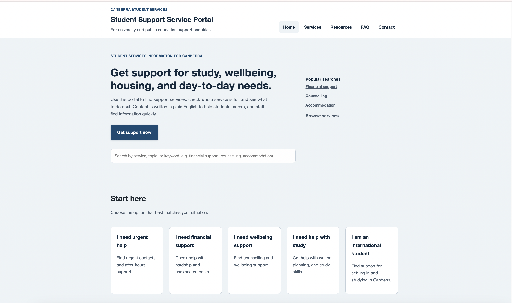
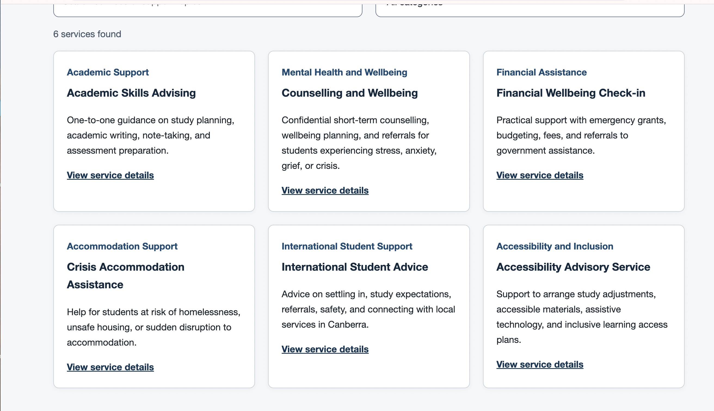
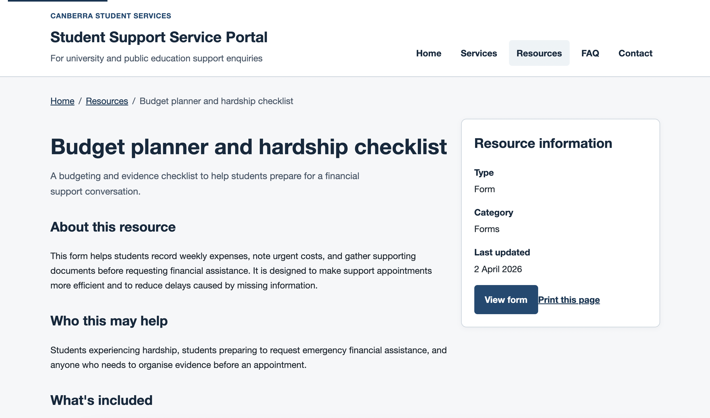
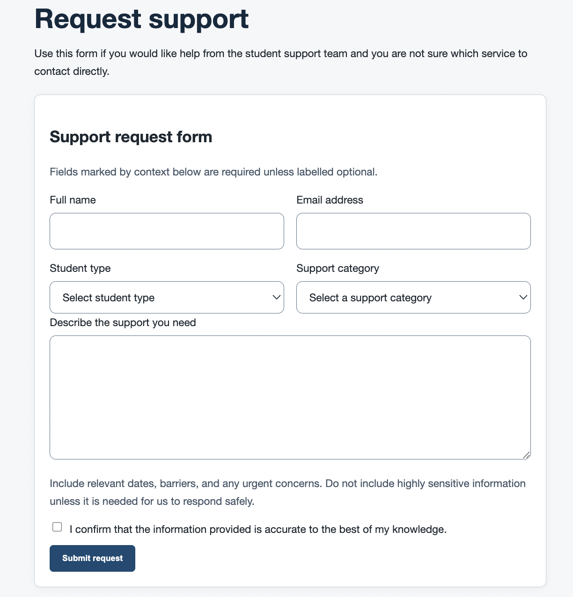

Case Study · Service Design / Web Content
Student Support Service Portal
A student support portal concept for university and public-sector environments, designed to help people find the right service, understand what they need, and move to a clear next step.

Problem
Why this project mattered
Student support information is often split across different teams, pages, and service names that are familiar internally but not to students. This project explored how a clearer portal structure could bring support content together in a way that is easier to scan, more accessible, and better aligned with public-sector and university publishing needs.
Users
Who it was designed for
- Students who need help quickly and may not know which team to contact.
- International students navigating local systems and support options.
- Students facing financial pressure, housing instability, wellbeing concerns, or accessibility barriers.
- Staff, carers, or advocates helping a student find the right support pathway.
Tools
Focus
Goals
What I focused on
The main goal was to create a support portal that felt plausible in a government or university setting, where users often arrive with an immediate need but limited understanding of how services are organised. The work focused on information architecture, content clarity, accessibility, and repeatable page structures that could support consistent publishing across teams.
Constraints and assumptions
What the concept needed to account for
This project was designed as a concept aligned with public-sector and university environments.
- Content would be managed through a CMS.
- Services would be owned by different teams.
- Users may not be familiar with internal service terminology.
- Accessibility and plain-English requirements are essential.
Key decisions
How the structure was shaped
- Task-based homepage structure. The homepage is structured around user intent rather than organisation structure, as support information is often organised internally by teams rather than by how students search for help.
- Sections such as Start here, Quick links, and Service categories allow users to enter the system based on their situation rather than needing to understand internal service ownership.
- Clear separation of Services and Resources. Two content types were defined: Services for actions such as applying or requesting support, and Resources for information such as guides and documents.
- This distinction reduces confusion, as students often struggle to differentiate between actions they need to take and information they need to read.
Key decisions
How content and navigation were simplified
- Strong entry point with a single primary action. The homepage is designed with one clear primary action, supported by search and browsing.
- This avoids competing actions, which are common in content-heavy environments, and helps guide users toward a clear next step.
- Scannable service pages. Service detail pages follow a consistent structure: eligibility, how to apply, required documents, and contact information.
- This structure is based on common user questions, reducing the need to interpret long-form content and improving scanability.
- Content-first design approach. Design decisions prioritised plain English, short paragraphs, clear headings, and a predictable layout.
- This reflects typical public-sector requirements, where clarity and accessibility are more important than visual complexity.
Key Screens
How the portal works across core tasks



The project includes a homepage entry point, task-based navigation, service pages, resource pages, FAQs, search states, and a contact flow designed around clear next steps.
Outcome
What the final structure improves
The final portal provides clearer entry points, more consistent page structures, and improved navigation between services and resources.
- Reduce time spent searching for the right service.
- Improve understanding of eligibility and next steps.
- Support more consistent content across teams.
This project demonstrates the ability to design and structure web content aligned with government and university environments.